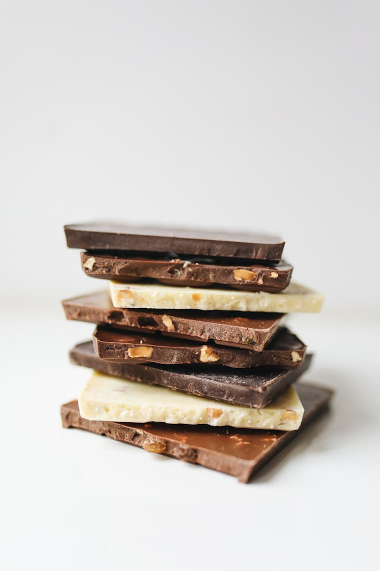

Nuestros Productos
Postres
Puedes disfrutar de gran variedad en deliciosos postres horneados con ingredientes naturales y recetas tradicionales de la casa.
Golosinas
Tenemos dulces y golosinas, de todos los estilos, sabores y tamaños para que compartas con tus amigos, en tus fiestas y eventos.

Chocolates
Encuentra chocolates para todos los gustos, Chocolate Blanco, con Leche, Negro, Amargo, Semiamargo y Orgánico.
Tortas
Acompañamos los dulces momentos de tu vida, con nuestras tortas tradicionales, especiales y personalizadas en todos los sabores y tamaños.